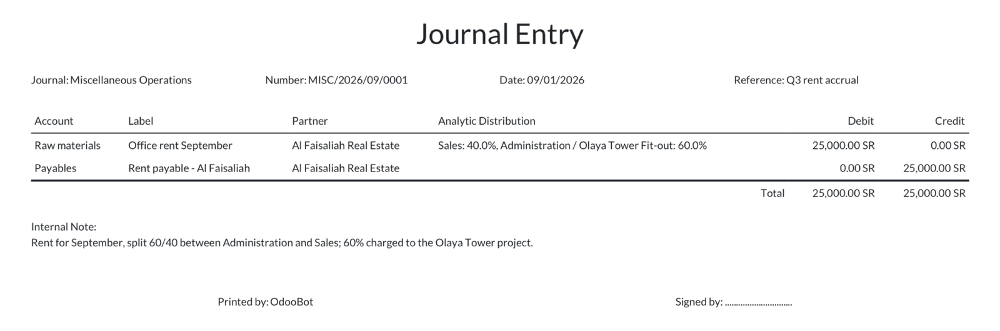
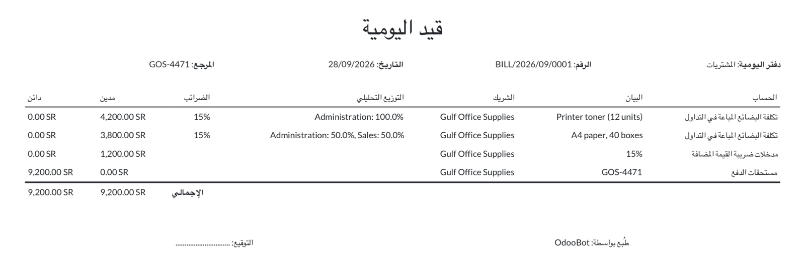

STRIDE is an Odoo Official Partner in Amman, Jordan, building and supporting Odoo for government, enterprise, healthcare and field-service organisations across Jordan, Saudi Arabia and the wider MENA region.
See what else we build at stridebs.com | support@stridebs.com
A rent accrual split across two analytic plans, printed from Odoo 20.0.

Printed from an Arabic database, the page runs right-to-left while amounts, entry numbers and Latin text keep their left-to-right order. Arabic labels ship with the module.

Install it and the report is in the Print menu. It depends on Accounting (account) only
and works on Community and Enterprise, on Odoo.sh and on-premise. Third-party apps cannot be
installed on Odoo Online (SaaS).
The PDF uses its own landscape A4 paper format; the company’s default paper format is not changed.